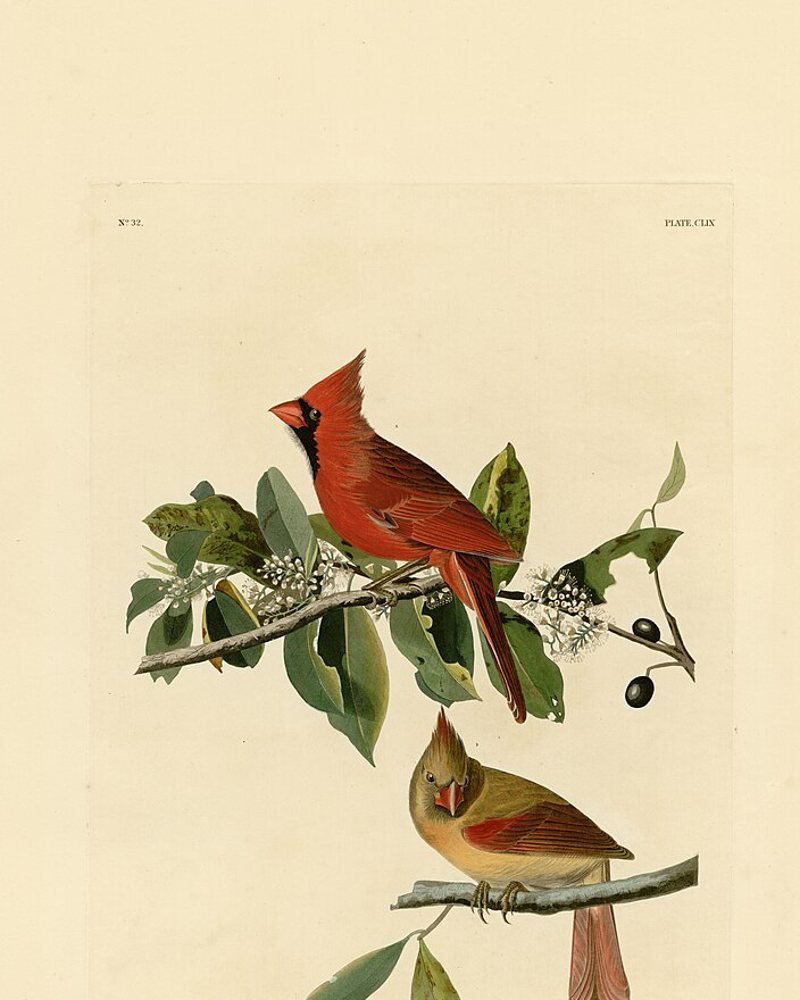
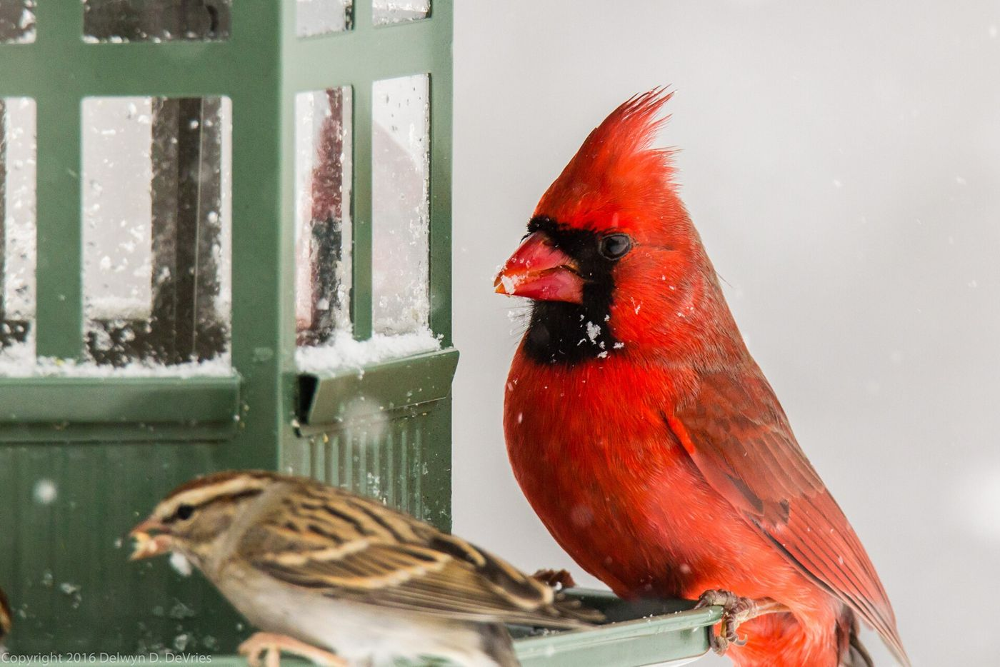
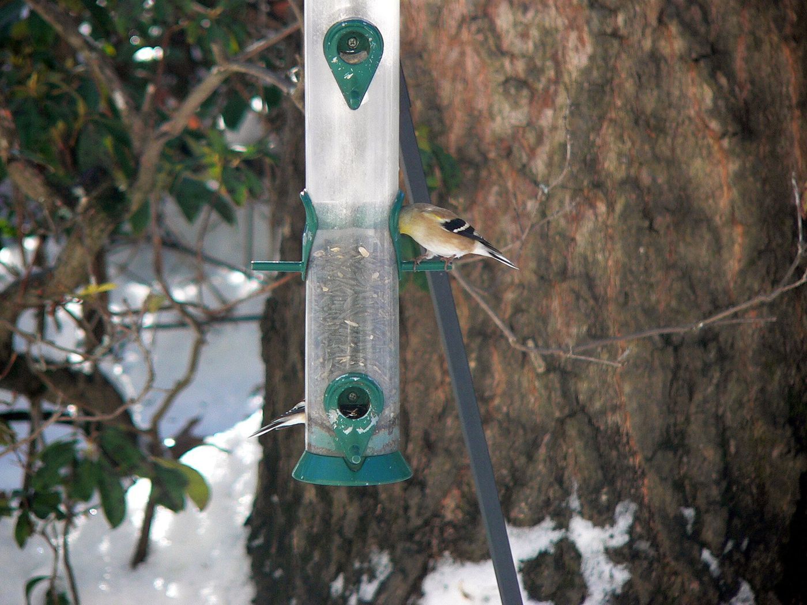
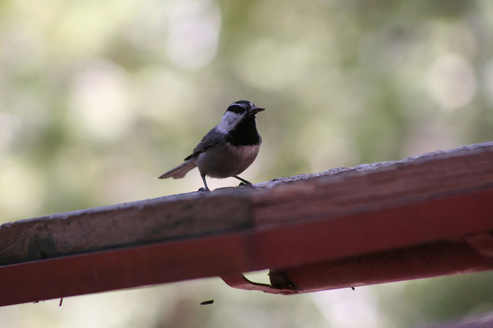
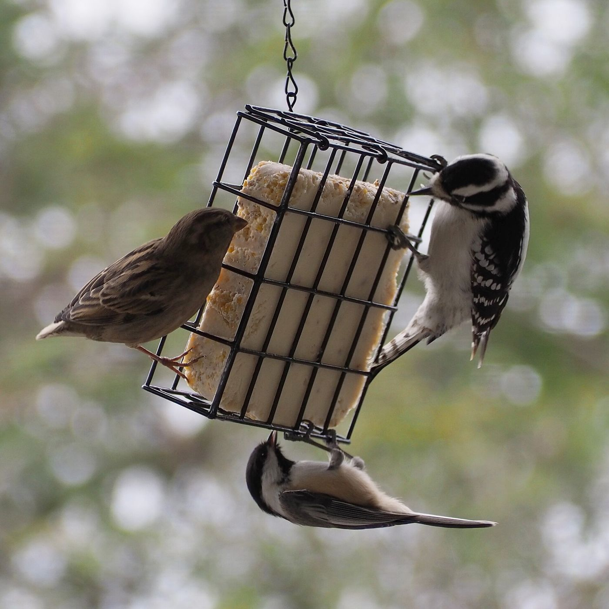
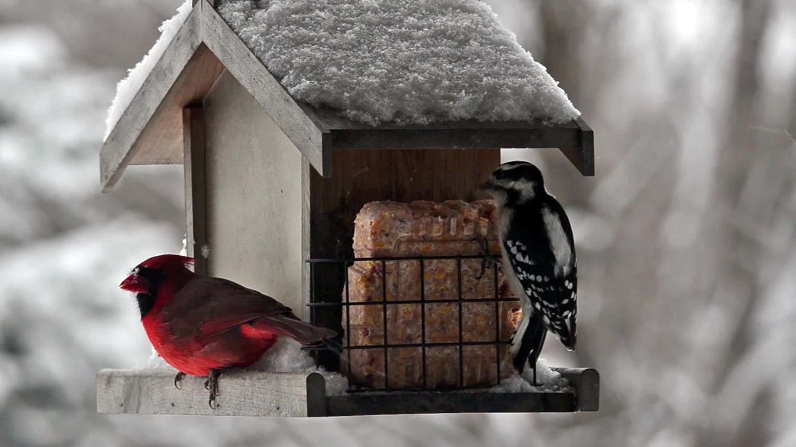
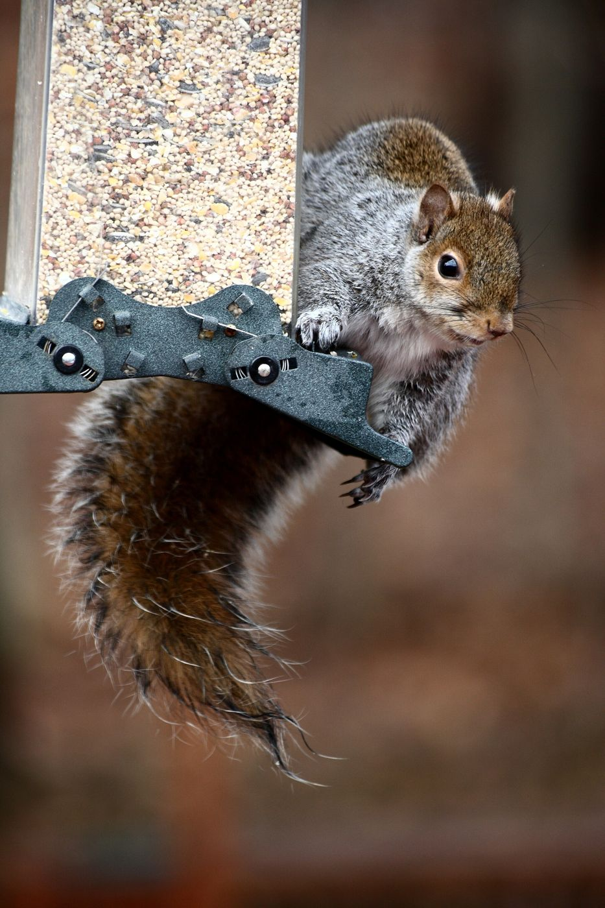
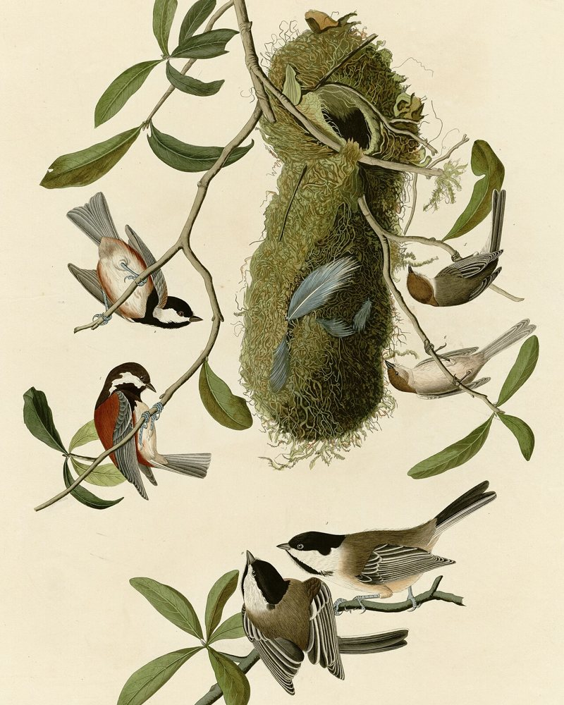
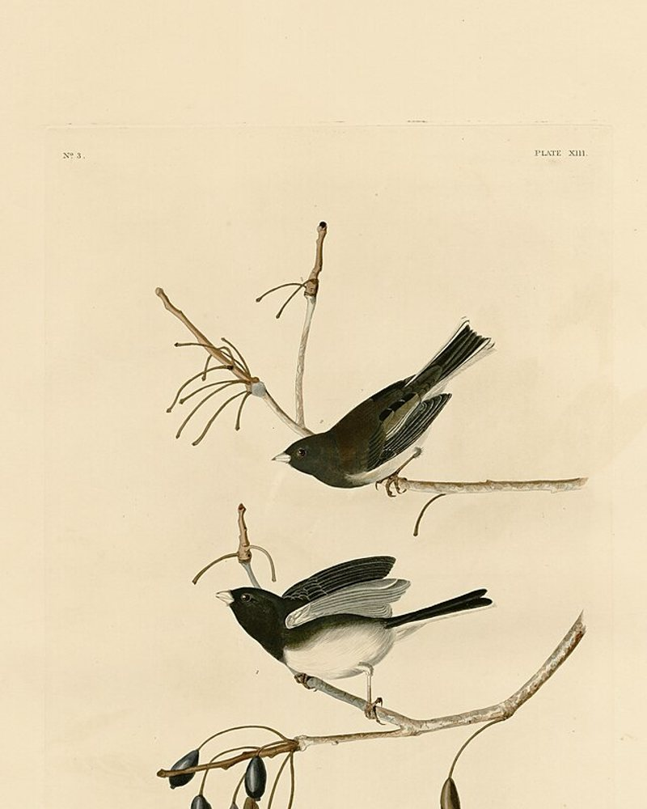
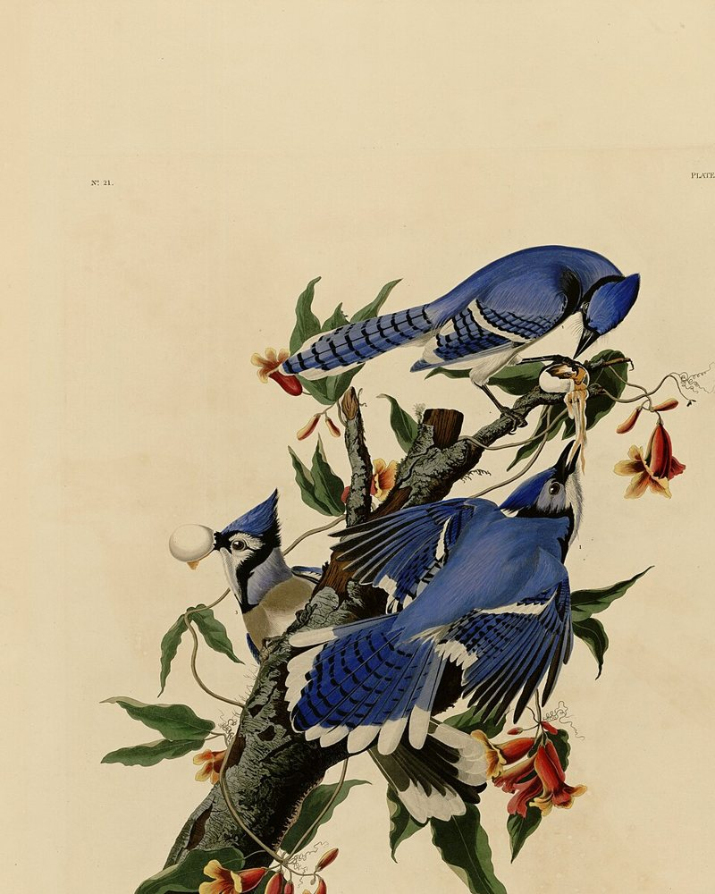

Brome Squirrel Buster Mini
Suits small yards and balconies: the smallest of the line, same closing shroud.
The trade-off: Holds less seed, so more refills. One owner reports the plastic aging after a couple of years.
Paid link
Paid links: As an Amazon Associate we earn from qualifying purchases.
Squirrel-resistant feeder picks, each with a budget, mid-range and premium option where one passes our bar.

Squirrel-resistant feeder picks
12 picksPrices change, so check them on Amazon
Three to start with. Tap a name to jump to it.
| Pick | Suits | Trade-off | Tier |
|---|---|---|---|
| Squirrel Buster Mini | Balconies and small yards | More refills | Budget |
| Squirrel Buster StandardOur pick for most yards | Most yards | Fewer extras than the Plus | Mid-range |
| Squirrel Buster Plus | Big yards and cardinal fans | The biggest of the three; a pole needs a separate adaptor | Premium |
| Squirrel Solution200 | A busy yard of small birds | Cardinals find its perches small | Mid-range |
| Squirrel Buster Legacy | A more decorative look | Same mechanism; the extra is the look | Premium |
| Pick | Suits | Trade-off | Type |
|---|---|---|---|
| Kingsyard Upside Down Double Suet Feeder | Woodpeckers, nuthatches and chickadees | Some squirrels and sparrows still get to it | Suet |
| Kingsyard Hanging Platform Feeder | Cardinals and birds that like a flat tray | Open, so squirrels can reach it; clean wet seed often | Tray |
| Kingsyard Ground Bird Feeder | Doves, juncos and other ground birds | Near the ground, so squirrels reach it easily | Ground |
| Pick | Suits | Trade-off | Tier |
|---|---|---|---|
| Wagner's Cardinal Blend | Cardinal fans | Squirrels and chipmunks like it too | Budget |
| Lyric Supreme Wild Bird Mix | A busy yard | More millet than some like; has corn | Mid-range |
| Cole's Hot Meats | Yards where squirrels still raid the feeder | Works in most yards, not all; wear gloves when filling | Premium |
Pick your yard and we'll show the one we'd start with. All three are weight-activated: when a squirrel hangs on, a shroud drops and closes the seed ports (maker's description).
Suits small yards and balconies: the smallest of the line, same closing shroud.
The trade-off: Holds less seed, so more refills. One owner reports the plastic aging after a couple of years.
Paid link

Suits most yards: the same mechanism in a mid-size feeder.
The trade-off: Holds less seed than the Plus and has fewer extras.
Paid link

Suits big yards and cardinal fans: about 5 lb of seed, 6 ports and a cardinal ring (maker's description).
The trade-off: It's the biggest and priciest of the line, and a pole needs a separate adaptor.
Paid link
The birds these feeders are made for, from real backyards. The last one is the reason this page exists.






Budget, mid-range and premium, where one passes our bar. Picks checked November 10, 2026. Prices change, so check them on Amazon.
Weight-activated feeders: when a squirrel hangs on, a shroud drops and closes the seed ports (maker's description). Birds are light enough to keep eating.
Suits small yards and balconies: the smallest of the line, same closing shroud.
The trade-off: Holds less seed, so more refills. One owner reports the plastic aging after a couple of years.
Our pick for most yards
Not sure where to start? Start here. It has the same squirrel-closing shroud as the bigger models, in a size that suits most yards.
Suits most yards: the same mechanism in a mid-size feeder.
The trade-off: Holds less seed than the Plus and has fewer extras.
Suits big yards and cardinal fans: about 5 lb of seed, 6 ports and a cardinal ring (maker's description).
The trade-off: It's the biggest and priciest of the line, and a pole needs a separate adaptor.
A few short emails: feeder placement tips, and any pick we add or swap.
More ports, still squirrel-resistant.
Budget
Nothing has passed our bar here yet.

Suits finches, chickadees and other small birds: 6 ports, weight-activated.
The trade-off: Owners say bigger birds like cardinals find its perches small.

Suits people who want a more decorative feeder with the same squirrel-resistant mechanism.
The trade-off: You pay more for the look, not for a different mechanism.
These aren't squirrel-resistant. They can bring in birds that skip tube feeders, like doves, juncos and woodpeckers. Place them away from fences and branches, and clean them often.

Suits woodpeckers, nuthatches and chickadees, which feed hanging upside down. Starlings and grackles find that harder (maker's description).
The trade-off: Owners say some squirrels and sparrows still figure it out, and one says woodpeckers only came once it was mounted sideways.

Suits cardinals and other birds that like a flat tray: 11 x 11 in, holds up to 3 lb of seed or mealworms (maker's description).
The trade-off: It's open, so squirrels can reach it if they can reach where it hangs. Wet seed can sit in the tray, so clean it often.

Suits doves, juncos and other ground birds: a raised mesh tray on folding legs that holds 5 lb (maker's description).
The trade-off: Owners say squirrels use it too. It sits near the ground, so it's the easiest of the three for squirrels to reach.
The seed decides which birds come, and what's left on the ground for squirrels.

Suits cardinal fans: Wagner's says it's blended for cardinals and other songbirds. 6 lb bag.
The trade-off: Owners say squirrels and chipmunks like it too, so pair it with a squirrel-resistant feeder.

Suits a busy yard: a 20 lb mix that's over half sunflower, plus nuts, with no fillers (maker's description).
The trade-off: Some owners find more millet in it than they'd like, and it contains corn, which squirrels like.

Suits yards where squirrels still raid the feeder: sunflower hearts coated in hot chili (maker's description). Birds don't react to chili heat the way squirrels do (Jordt and Julius, Cell, 2002).
The trade-off: Owners say it keeps squirrels off in most yards, though not all, and some birds won't eat it. It costs the most of the seeds here. Wear gloves when you fill the feeder and keep your hands away from your eyes. One owner says doves seemed agitated at the tray it was in.
Seed picks checked November 12, 2026.
Some people would rather feed the squirrels than fight them. PetMD and Wild Bird Scoop both suggest a squirrel feeder well away from the bird feeder. It may bring more squirrels to the yard, so give it real distance.

Suits a tree, fence or post: a recycled-plastic box with a glass jar for peanuts and corn (maker's description).
The trade-off: Owners are split on whether the jar lock holds. One says seed can go moldy under the roof, and one says the included screws broke. Clean it often and mount it with your own outdoor screws.
Pole baffles: right now almost none meet our quality bar, so we list none. The free fix still works:
Every feeder goes through the same checks before it's listed. No feeder is fully squirrel-proof, so we tell you each one's trade-off too.
CheckedNovember 10, 2026
No feeder is fully squirrel-proof. These close their seed ports when something as heavy as a squirrel hangs on (maker's description), and birds are light enough to keep eating. Hang it away from fences, branches and roofs as well.
The Plus has a cardinal ring, a wide perch made for bigger birds (maker's description). Owners say cardinals find the Solution200's perches small.
Prices on Amazon change often, so any number we wrote would soon be wrong. Each button opens the item on Amazon, where you see today's price.
If you buy through a button on this page, Amazon pays us a commission. It costs you nothing extra, and it doesn't change which feeders we list.



We add and swap feeders as better ones show up. Leave your email and we'll tell you when this page changes. Our emails link back to this page, never straight to a store.